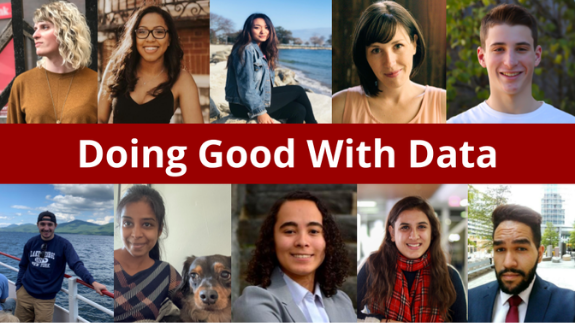

Welcome!
Welcome to Master's of Science in Data Analytics and Computational Social Science program.

Find your next employee
Please use the below dropdowns to filter students based on the following:
- Domains
- Job Type (Fulltime, Part time)
- By Graduation date
See our work!
Below are moments captured from DACSS Research Symposium where out students present their work through paper presentations!


To explore the full range of our students’ talents and expertise, we invite you to visit the Projects section
Contact Us
::: row ::: {.col-sm-6 .d-flex .justify-content-center} ::: text-center
Al Simon
Assistant Director for Career Services and External Engagement
:::
::: col-sm-6 {=html} <script src="https://apps.elfsight.com/p/platform.js" defer></script> ::: elfsight-app-8bc17fb7-0408-491a-8576-0f96ea7c486f ::: ::: :::